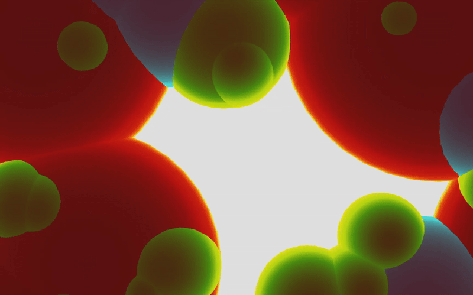
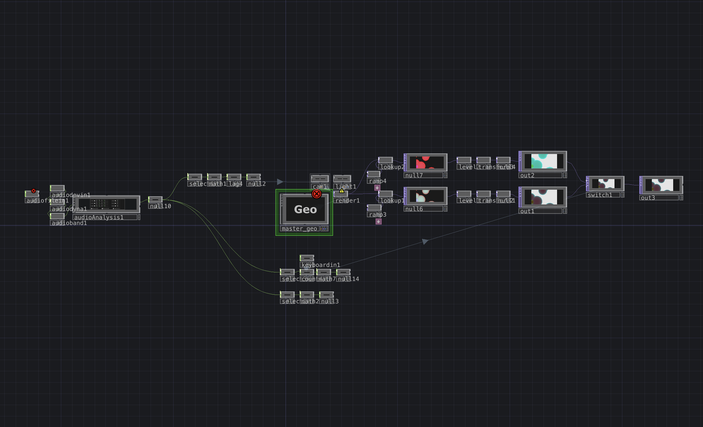

Overview
Bloodwork is an audio-reactive visual performance created in TouchDesigner, built around geometric instancing to evoke a microscopic, cell-like ecosystem. Set to “Bloodwork” by The Dare, the piece depicts circular entities that pulse, swarm, and transform in response to musical structure. Three distinct “cell” types populate the scene— large red cells, medium blue cells, and small green cells, each behaving according to different frequency bands and thresholds in the track. As the song progresses, these cells organically shift in dominance, framing a loose narrative of infection: red cells as blood, blue as immune response, and green as an invasive presence that multiplies and spreads. The result is an abstract reimagining of a blood sample under a microscope, driven entirely by the dynamics of sound.


Click image to view gallery
Methods
Bloodwork’s behavior is constructed using TouchDesigner’s geometry, instancing, and audio analysis workflows. All three cell types are instanced spheres driven by noise TOP values, which continuously generate idle motion through XYZ transform coordinates, giving the impression of drifting, gravitational bodies. Audio-reactive logic is layered on top of this baseline movement:
- Low frequencies trigger large red cell pulsing.
- Mid frequencies animate medium blue cells.
- High frequencies activate small green cells.
Green cell behavior expands as the song intensifies. A TOP-based counter detects kick hits within the early portion of the track; once a threshold is reached, the green cells begin to multiply at rates tied to high-frequency activity and the spectral centroid. High multiplication cues a camera pull-back to reveal more of the population, and shifts the scene briefly toward a green hue. By the final stages of the performance, the green cells dominate, overtaking the red and blue instances. Through these layered systems, Bloodwork translates audio data into motion, growth, and color in a way that mirrors infection dynamics and builds tension alongside the music.

Click image to view gallery